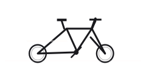

Divers
Scorcher
Scorcher dans GTA VI : divers. Inspiration : Saracen Zen, Rockshox Domain 180mm. Vu dans un support officiel, sans nom communiqué.
Silhouette temporaire en attendant l’intégration des images du véhicule.
Ce qu’il faut savoir
Vélo tout-terrain à suspension, le Scorcher est destiné aux chemins et aux parcs plutôt qu’à la route. Le Mount Kalaga National Park, recensé sur notre carte, est le genre d’endroit où ce type de vélo prend tout son sens. Les captures officielles le montrent appuyé contre un muret.
Pour situer
Scorcher est un véhicule de la catégorie divers recensé sur Leonidakit. Aperçu officiellement, nommé par déduction : cette fiche garde le nom le plus probable et le changera dès que Rockstar en publiera un. Il est visible sur une ou plusieurs captures de la galerie officielle de rockstargames.com.
Les chiffres arrivent avec le 19 novembre 2026 : prix, vitesse de pointe, accélération, capacité et emplacements de vente, relevés dans le jeu.
Le modèle réel
Le rapprochement retenu pour ce véhicule est Saracen Zen, Rockshox Domain 180mm. Il s’agit d’une comparaison visuelle, pas d’une information officielle : le studio ne commente pas ses inspirations.
Dans la série, ce type de véhicule
La catégorie divers rassemble ce que la série propose en dehors des voitures, motos, bateaux et aéronefs : vélos, trottinettes, transports guidés.
Identité
| Modèle | Scorcher |
|---|---|
| Constructeur | Marque inconnue |
| Statut | Vu dans un support officiel |
| Catégorie | Divers |
| Inspiration réelle | Saracen Zen, Rockshox Domain 180mm (rapprochement communautaire) |
| Source | Captures officielles |
Fiche documentaire
Ce qui n’est pas encore publié garde son état : rien n’est inventé, et les coûts d’usage ne sont pas des mécaniques confirmées.
L’obtenir
- Prix
- Prix à venir
- Achetable
- Achat à confirmer
- Comment l’obtenir
- Obtention à confirmer
- Où le trouver
- Emplacement à venir
Performances
- Accélération
- À confirmer
- Vitesse maximale
- À confirmerUne vitesse maximale n’est pas une vitesse de trajet.
- Freinage
- À confirmer
- Tenue de route
- À confirmer
Capacités
- Places
- À confirmer
- Terrain
- routeEstiméDéduit du type de véhicule (catégorie du site), pas d’une fiche technique.
- Chargement
- À confirmer
Coûts d’usage
- Carburant
- Ne s’applique pasSe déplace sans carburant : rien à payer pour rouler.
- Entretien
- Entretien : mécanique non confirméeAucun coût d’entretien de véhicule n’est annoncé pour GTA VI.
- Réparations
- Réparations : mécanique non confirméeLes réparations payantes de GTA V ne prouvent rien pour GTA VI.
- Assurance
- Assurance : mécanique non confirméeAucune assurance de véhicule n’est annoncée pour GTA VI.
- Revente
- Revente : mécanique non confirméeUne revente compte seulement si elle est possible et si son prix est connu ou choisi comme hypothèse. Elle ne réduit jamais l’argent à payer aujourd’hui.
Sur la carte de Leonida
Vendeurs, atelier et circuit sont déjà cartographiés. Le détail des apparitions par véhicule suivra le lancement.


Divers
Scorcher
Où le trouver : Emplacement à venir
Lieux liés aux divers sur notre carte (pas un emplacement confirmé pour ce véhicule) : Vapid Dealership, Baller Dealership, Marlin Motors, Status Auto Resort, Rideout Customs, Chip’s Body Shop, Watkins Auto Parts.
Lieux liés sur notre carte
- Vapid DealershipConcessions · SouthsideVoir sur la carte
- Baller DealershipConcessions · SouthsideVoir sur la carte
- Marlin MotorsConcessions · SouthsideVoir sur la carte
- Status Auto ResortConcessions · CrosstownVoir sur la carte
- Rideout CustomsAteliers · CrosstownVoir sur la carte
- Chip’s Body ShopAteliers · Key LentoVoir sur la carte
- Watkins Auto PartsAteliers · Port GellhornVoir sur la carte
Une erreur sur cette fiche ? Chaque modèle réel cité est une déduction tirée des images officielles. Le studio ne confirme rien, et nous n’exploitons aucun contenu volé. Si tu as une correction, la page Contact est là pour ça.